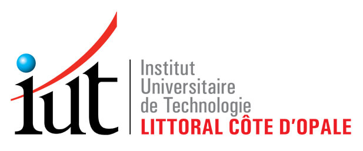
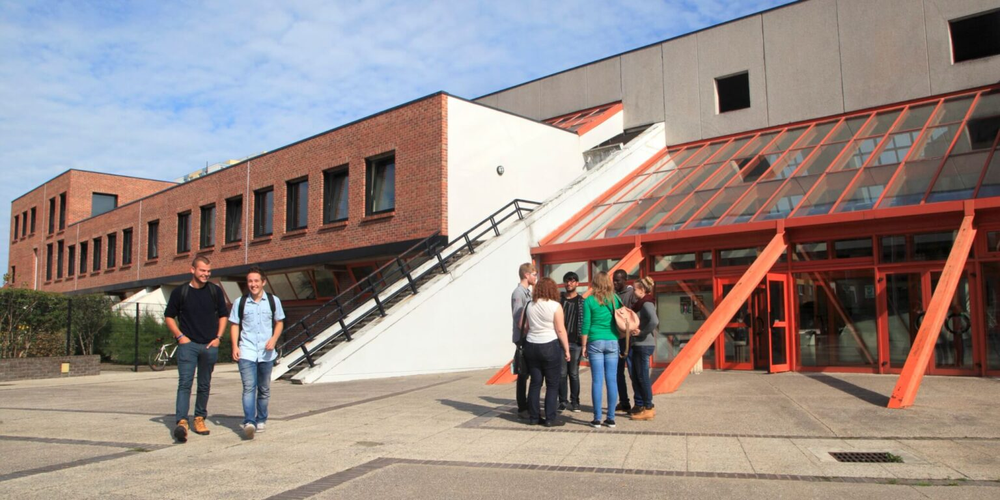
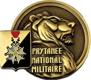
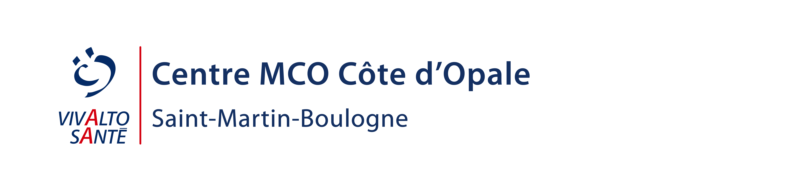
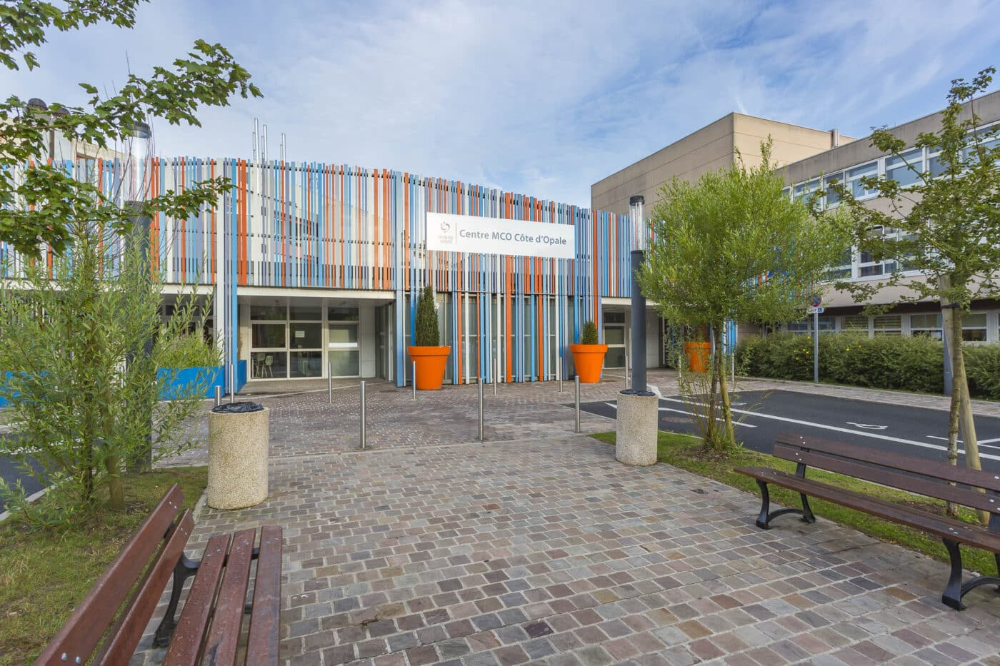
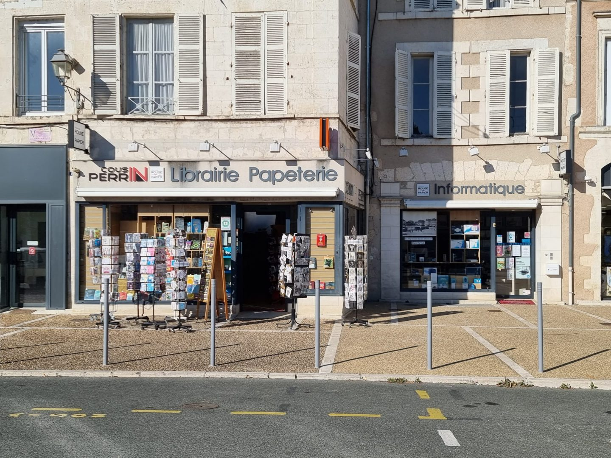
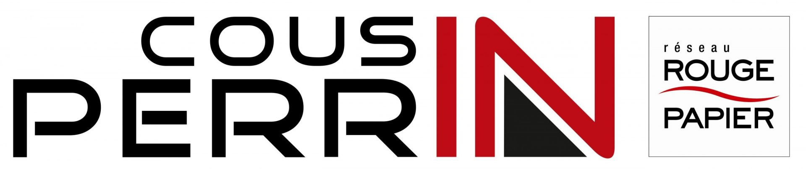

Je suis actuellement étudiante en
3ème année de BUT Informatique à l'IUT de Calais.
J’effectue depuis 2 ans mon
alternance dans l’entreprise CMCO Côte d’Opale du
groupe Vivalto Santé à Saint-Martin-Boulogne.
J’effectue de
l’aide à l’utilisateur ainsi que des manipulations réseau sur
l’infrastructure.
Le réseau est un domaine qui m’intéresse. J’ai pu
réaliser plusieurs projets en développement ainsi qu'en réseau durant
mon parcours universitaire et professionnel.

Mon parcours scolaire
2023 - 2026
IUT du Littoral côte d’opale (62100 CALAIS)
Bachelor Universitaire de Technologie (BUT) Informatique
Durant cette formation, j'ai pu acquérir des compétences en
informatique et plus particulièrement en développement, en réseau
ainsi qu'en base de données.
Les projets réalisé durant cette formation m'ont permis de mettre en
pratique les compétences et connaissances que j'ai aprrise au cours
de ma formations. Ces mises en situation réel permettent de mieux
comprendre les enjeux lié au monde professionnel.


2020 - 2023
Lycée Prytanée National Militaire (72200 LA FLECHE)
Baccalauréat Général 2023
(spécialités Mathématiques, Numérique et Sciences Informatiques)
Obtention du baccalauréat en 2023.

Mes expériences professionnelles
2024 - 2026
Alternance dans l’entreprise CMCO Côte d’opale de Vivalto Santé
Saint Martin Boulogne 62200
Tâches et missions réalisées :
• Configuration de Switch
• Installation de postes
informatiques
• Manipulation réseaux
• Aide utilisateur



2020
Stage de 3ème d’une semaine
Cousin Perrin, Le Blanc 36300
• Maintenance sur des ordinateurs
• Mise à jour de logiciels
informatiques
• Aide aux particuliers

Quelques projets
Développement d’une interface en PHP
Développement d'un site en PHP localement à l’aide de WAMP. Ce site répertorie des étudiants, des enseignants, des matières... L’objectif était que, via une interface utilisateur, nous puissions enregistrer de éléments qui sont ensuite ajouté dans une base de donnée via des requêtes réalisé en Back-end. L’interface visuelle permet donc de créer par exemple un étudiant, de le modifier et de visualiser tout ce qui est présent dans la base de données de manière structurée et organisée.
 Voir le projet
Voir le projet
Nom du projet 2
Petit texte explicatif du projet. Présentation rapide de l’objectif, des technologies utilisées ou du contexte.
 Voir le projet
Voir le projet
Nom du projet 3
Petit texte explicatif du projet. Présentation rapide de l’objectif, des technologies utilisées ou du contexte.
 Voir le projet
Voir le projet
Mon CV
Télécharger le CV